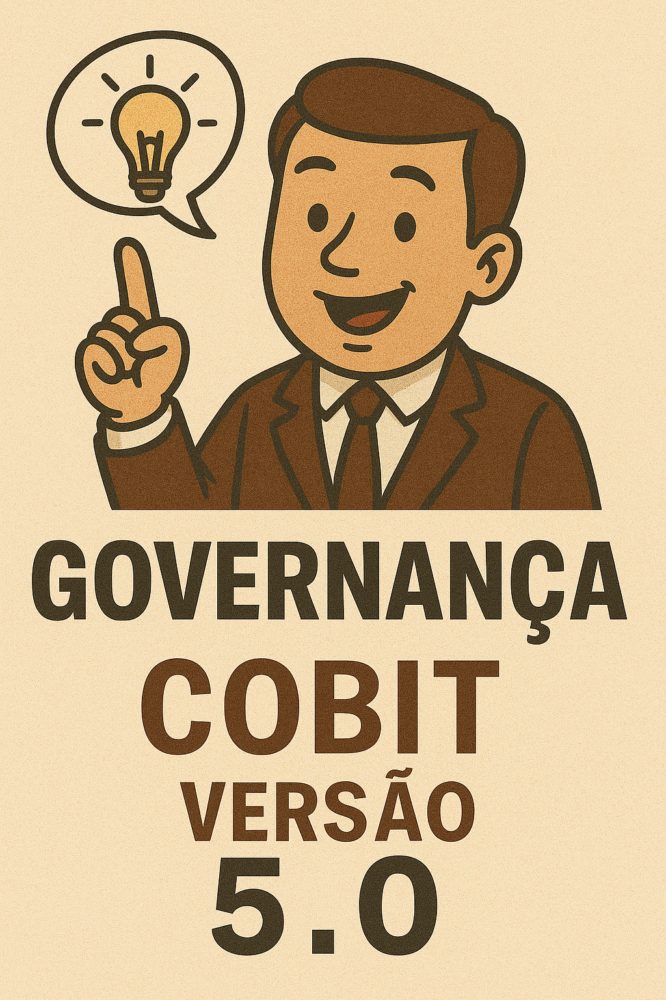
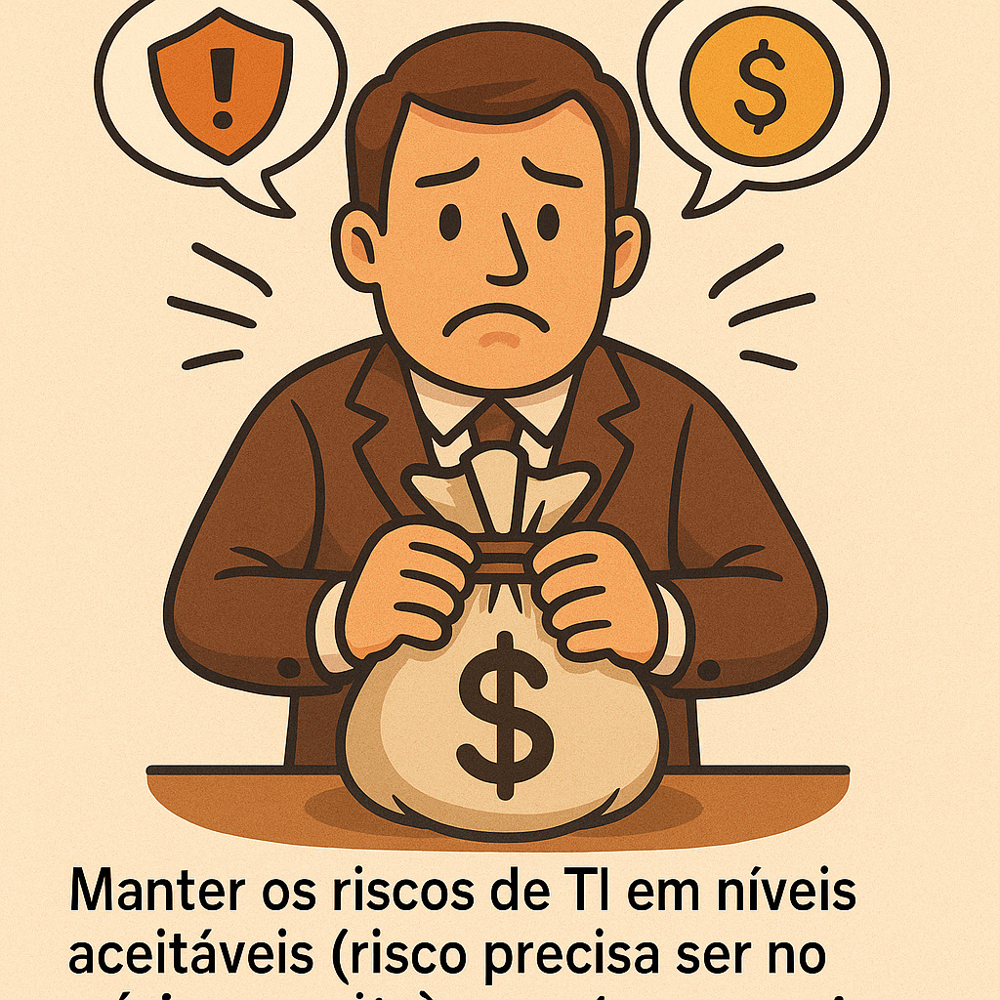
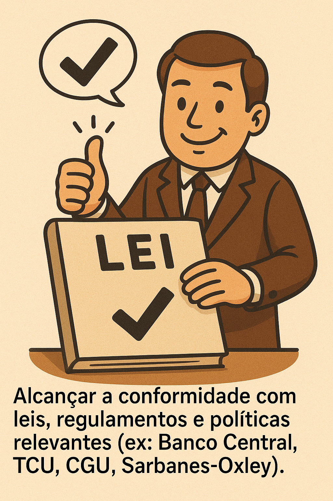
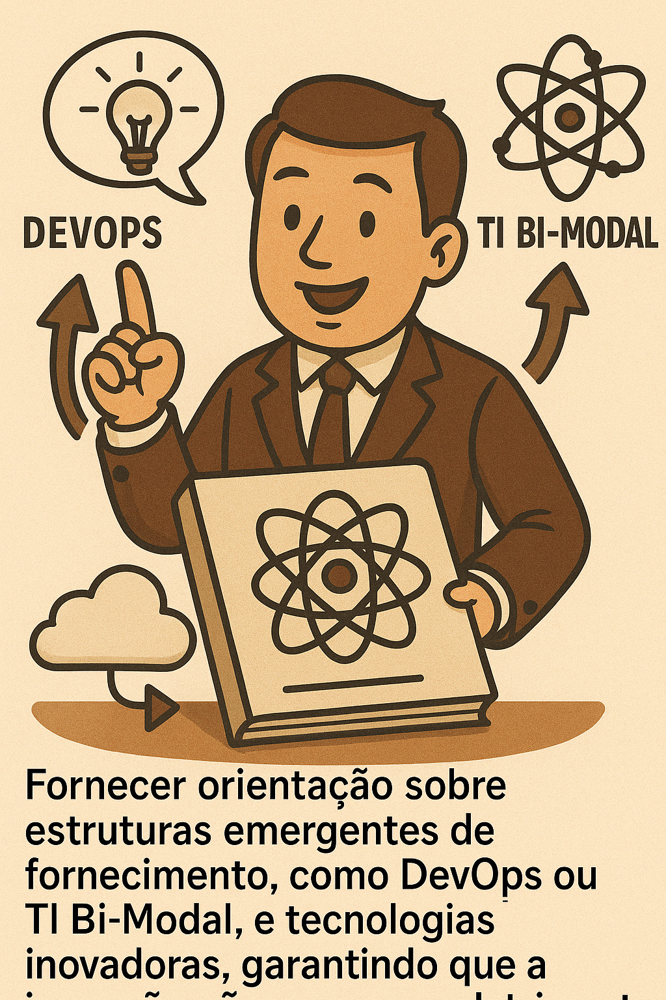

Slide 8 Aula 07: Visão Geral do COBIT 5

8.1 Agenda
- Porque o COBIT versão 5 ?
- Quais os benefícios da versão COBIT 5 ?
- A arquitetura de produto e o formato do COBIT 5.
- O que é a gestão global ou gestão holística da TI no COBIT 5 ?
- Como o COBIT 5 “conversa” com outros frameworks e padrões de mercado.
8.2 2. Porque o COBIT versão 5 ?
O COBIT 5 é um modelo de negócio, desenvolvido pela ISACA, voltado para a Governança Corporativa em TIC.
8.2.1 O que é ISACA ?
O COBIT 5 foi desenvolvido pela ISACA (Information Systems Audit and Control Association):
- É uma associação global sem fins lucrativos (embora as publicações sejam pagas).
- Foi fundada em 1969.
- Conta com aproximadamente 140.000 profissionais afiliados em mais de 180 países e tem mais de 200 capítulos em todo o mundo (incluindo Brasil).
- Oferece certificações mundialmente respeitadas, como CISA, CISM, CGEIT e CRISK.
8.2.2 2.2. O Acrônimo e a Evolução
Originalmente, o COBIT era um acrônimo para Control Objective for Information and related Technology (Objetivos de Controle para a Informação e sua Tecnologia Relacionada). Atualmente, COBIT é apenas uma marca que identifica o framework da ISACA.
Trajetória de Evolução:
| Versão | Ano | Foco Principal |
|---|---|---|
| COBIT 1 | 1996 | Auditoria (COBIT 1 era como um “Excelzinho” de controles). |
| COBIT 2 | 1998 | Controle. |
| COBIT 3 | 2000 | Gerenciamento (passou a ter processos). |
| COBIT 4.0/4.1 | 2005/2007 | Governança de TI (adicionando segurança, controle de investimento, risco de TI). |
| COBIT 5 | 2012 | Governança da TI Corporativa (integração de práticas, princípios e habilitadores). |
8.3 Quais as razões para se criar a versão COBIT 5 ?
Também chamados de motivadores, temos basicamente 2 razões
8.3.1 3.1. Razões (motivadores) da ISACA (Diretriz do Conselho Executivo)
A ISACA atualizou a base de conhecimento do COBIT e ao mesmo tempo criou as novas certificações, gerando receita para essa associação global. Isso também implicou em:
- Prover uma estrutura de governança e gestão renovada e autoritária. (quase ditatorial)
- Integrar todas as principais estruturas e orientações da ISACA, que antes eram publicações isoladas. Exemplos de estruturas integradas: Val IT (para controle de investimentos em TI), Risk IT (para gerenciamento de riscos de TI), e ITAF (para assurance).
- Alinhar o COBIT com outros frameworks e normas de mercado.
8.3.2 3.2. Razões (motivadores) de Negócio
O COBIT 5 foi desenvolvido para cobrir as responsabilidades da empresa em relação à TI, que se tornou pervasiva (incrustrada em todas as operações de negócio).
Os principais motivadores relacionados às necessidades das organizações incluem a pressão constante para:
| Motivador | Detalhe | Imagem |
|---|---|---|
| Cobrir de Ponta a Ponta | Cobrir responsabilidades do negócio e TI de ponta a ponta, entendendo que a TI é responsabilidade de todos na empresa. | |
| Criação de Valor | Assegurar a criação de mais valor e o aumento do retorno da governança sobre a TI corporativa. | |
| Satisfação e Relacionamento | Obter a satisfação dos usuários de negócio e melhorar a relação entre negócios e TI, que é uma relação viva e complexa. | |
| Controle de Risco e Custos | Manter os riscos de TI em níveis aceitáveis (risco precisa ser no mínimo aceito) e conter os custos. |  |
| Conformidade | Alcançar a conformidade com leis, regulamentos e políticas relevantes (ex: Banco Central, TCU, CGU, Sarbanes-Oxley). |  |
| Novas Estruturas e Tecnologias | Fornecer orientação sobre estruturas emergentes de fornecimento, como DevOps ou TI Bi-Modal, e tecnologias inovadoras, garantindo que a inovação não ocorra em detrimento do controle. |  |
8.4 4. Escopo, Informação e Benefícios
8.4.1 4.1. O Escopo do COBIT 5
O COBIT 5 é aplicável à governança e gerenciamento da informação em qualquer que seja o meio utilizado e de ponta a ponta na organização.
- Abrangência Holística: O COBIT 5 é completo e abrangente (holístico).
- Adaptabilidade: O COBIT 5 deve ser adaptado ao ambiente, tamanho, cultura e características de negócio da empresa (ex: bancos, hospitais, setor público).
- Público-alvo: Ele é relevante para Gerentes de Negócio, Diretores, Auditores, Consultores, e Profissionais de TI/Segurança da Informação.
8.4.2 4.2. O Papel da Informação
A informação é considerada a moeda do mercado no século 21, valendo muitas vezes mais do que o dinheiro.
O COBIT 5 define um ciclo de vida para a informação, que inclui as fases de: 1. Idealização/Criação 2. Uso 3. Manutenção 4. Divulgação/Proteção 5. Descarte/Destruição
O framework define requisitos de qualidade para que a informação possa subsidiar decisões executivas de qualidade.
8.4.3 4.3. Benefícios Corporativos
Ao utilizar o COBIT 5, a organização obtém benefícios como:
- Geração de Valor: Gerar valor para o negócio a partir dos investimentos em TI, alcançando metas estratégicas (o COBIT olha todo o ciclo de investimentos, integrando o Val IT).
- Excelência Operacional: Alcançar uma operação estável, consistente e robusta.
- Gestão de Risco: Manter os riscos de TI sob controle, em níveis aceitáveis.
- Otimização de Recursos: Otimizar recursos (incluindo custos, pessoas, infraestrutura) através do uso eficiente.
8.5 5. Arquitetura e Formato do COBIT 5
O COBIT 5 é baseado em cinco valores fundamentais (princípios) e sete elementos fundamentais (habilitadores).
O framework é fornecido através de uma Família de Produtos (ou publicações):
- COBIT 5 Framework: O guia principal. Está disponível para download gratuito no site da ISACA (www.isaca.org).
- Guias de Habilitadores: Explicam em detalhe os sete habilitadores. Exemplos incluem:
- COBIT 5 Habilitando Processos.
- COBIT 5 Habilitando Informação.
- Guias Profissionais: Endereçados a públicos específicos ou áreas temáticas:
- COBIT 5 Implementação.
- COBIT 5 para Risco.
- COBIT 5 para Segurança da Informação.
- COBIT 5 para Garantia (Assurance) (verificações de conformidade).
8.6 6. COBIT 5 e Outros Frameworks e Normas
O COBIT 5 atua como um guarda-chuva para outros frameworks e normas. Eles não são excludentes, mas sim complementares.
A relação entre modelos pode ser vista em camadas:
| Nível | Modelos | Função |
|---|---|---|
| Governança Corporativa | COSO, Balanced Scorecard (BSC) | Modelos de alto nível que olham a empresa inteira. O COBIT particulariza o COSO para a TI. |
| Governança de TI | COBIT 5 | Define o quê precisa ser feito em termos de governança e gestão de TI. Ele estabelece os requisitos de controle. |
| Padrões e Boas Práticas (O Como) | ITIL, PMBOK, PRINCE2, TOGAF, CMMI | Frameworks que definem como os requisitos de controle do COBIT podem ser atendidos. Por exemplo, a ITIL detalha o gerenciamento de serviços (incidente, mudança). |
| Normas (ISO) | ISO 38500 (Governança de TI), ISO 27001 (Segurança), ISO 20000 (Gerenciamento de Serviços) | As ISOs garantem mais consistência, pois são sistemas de gestão que a empresa escolhe implementar (sendo rigorosas). |